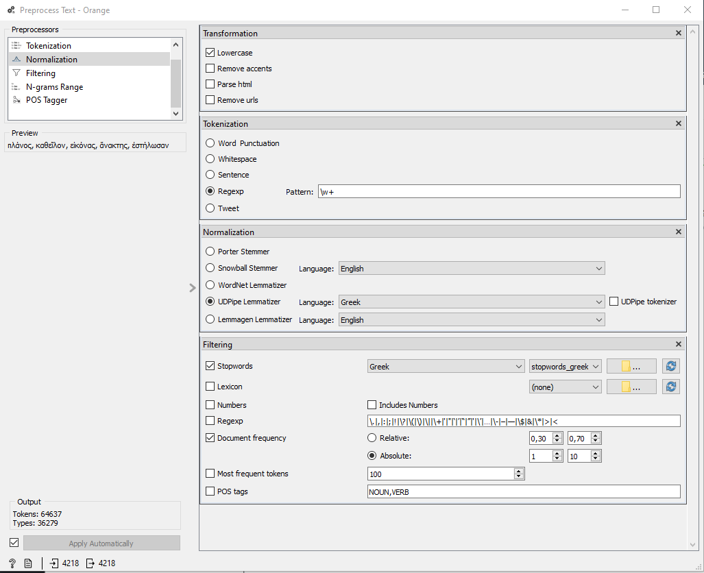

Compte-rendu du TP02 : description du corpus de données.
Présentation du corpus
Vitali-Rosati, Marcello, Elsa Bouchard, Christian Raschle. “Pour une édition numérique collaborative de l’Anthologie grecque.” Chaire de recherche du Canada sur les écritures numériques, Accédé le 9 novembre 2022, <url = https://anthologiagraeca.org/>.
Pour une liste complète des collaborateurs (coordination, développement, éditeurs, partenaires, etc.), consulter le site web https://anthologiagraeca.org/pages/equipe-et-partenaires/.
Une grande partie des textes en grec ancien et des traductions en anglais sont tirés de :
Paton, W. R. The Greek Anthology. Harvard University Press; W. Heinemann, New York, 1916-18. (Cinq vo)
Le manuscrit
- Critères linguistiques − [x] Genre − [ ] Registre de langue − [x] Langue
L’Anthologie grecque est un recueil qui regroupe la poésie épigrammatique grecque issue de la période classique jusqu’à la période byzantine, soit près de 4000 pièces, de 325 auteurs différents, s’étalant sur plus de 15 siècles. Telle que nous la possédons aujourd’hui, l’Anthologie a une histoire complexe [@cameron_greek_1993]. L’expression « Anthologie grecque » désigne l’ensemble constitué par deux parties. D’une part, l’Anthologie palatine, un manuscrit datant du Xe siècle (le Codex Palatinus 23) retrouvé en 1606 par Claude Saumaise à la Bibliothèque palatine d’Heidelberg. D’autre part, l’Appendix Planudea, soit les épigrammes absentes du manuscrit palatin présentes dans l’Anthologie de Planude, une compilation datant du début du XIVe siècle, rédigée par Maxime Planude [@aubreton_tradition_1968; @beta_moi_2019].
Monument de la littérature, l’Anthologie est le document principal qui nous transmet la poésie épigrammatique antique [@gutzwiller_poetics_1997; @gutzwiller_poetic_1998]. Né en Grèce, le genre de l’épigramme évolue de manière significative dans l’histoire de la littérature grecque, mais également au sein même de l’Anthologie. Initialement composée pour être gravée (epigramma signifie « texte inscrit sur un objet »), l’épigramme se présente comme un petit poème, simple, composé d’une ou de deux lignes. Les premières épigrammes étaient des épitaphes ou des inscriptions accompagnant une statue, un don ou un ex-voto. Vers le VIe siècle, ces inscriptions se versifient. Dès l’époque hellénistique, l’épigramme se détache de son support, se diversifie dans son propos et devient un véritable genre littéraire, caractérisée par sa brièveté (brevitas) et son trait piquant (argutia), et se grave désormais non pas dans le marbre, mais dans l’esprit du lectorat.
[LES LIVRES DE L’AP]
Description de l’API
[DISTINGUER L’API DU MANUSCRIT]
La Chaire de recherche du Canada sur les écritures numériques porte depuis 2014 un projet de recherche initialement intitulé “Édition numérique collaborative de l’Anthologie Palatine et de ses multiples vérités”, puis “Pour une édition numérique collaborative de l’Anthologie grecque” suite à l’intégration du manuscrit de Planude dans le projet. L’un des développements menés dans cette recherche consiste à rendre disponible ce manuscrit sur le Web grâce à une API (Application Programming Interface) : chacune des épigrammes devient un fragment accessible au moyen d’une requête GET. Ce dispositif est documenté sur un site web dédié. Dans ce projet de fouille de texte, cette API sur laquelle nous nous appuyons pour construire notre corpus offre une collection de 4134 épigrammes en Grec ancien rédigées par 309 auteurs1 répandus sur 16 siècles d’histoire. L’ensemble de ce manuscrit est disponible en accès libre. Nous remercions les partenaires du projet :
- La Chaire de recherche du Canada sur les écritures numériques, porteuse du projet de recherche et de l’API ;
- La Bibliothèque numérique Perseus, grâce à laquelle les textes en grec et en anglais ont pu être récupérés ;
- La Bibliothèque Palatine (Heidelberg), qui rend disponible les épigrammes sous forme de fragment (image) au format IIIF.
Récupération des données
- Critères technologiques − [x] Provenance − [x] Support − [x] Format(s) des documents constituants le corpus
- Critères Informationnels − [x] Discipline − [ ] Sujets − [x] Présentation sommaire du corpus − [ ] Justification du lien entre la tâche à réaliser et le corpus
Les données sont disponibles via l’API à l’URL suivante : http://anthologiagraeca.org/api/passages. Pour ne pas travailler uniquement depuis l’API, nous avons décidé d’exporter l’ensemble des épigrammes du corpus dans un fichier que nous garderons en local. Pour ce faire, nous avons réalisé un petit script en python décrit ci-dessous. L’ensemble des données de l’API sont accessibles via l’endpoint, pour les récupérer, nous les injectons sous forme de liste dans une variable results. L’API sert les données paginées, de fait les données récupérées sont limitées à la première page. Or nous voulons récupérer l’ensemble du corpus. Pour parer cette fonctionnalité nous créons une boucle while pour modifier l’URL de la page (vers la page suivante) et indexer toutes les données de chacune des pages de l’API dans notre variable.
# Importation of the useful libraries
# Definition of our variables for the requests
import requests
import json
import csv
url = 'http://anthologiagraeca.org/api/passages'
parameters = {
'format':'json',
'limit':'500'
}
results = []
pagination= True
while pagination == True :
data = requests.get(url, parameters).json()
for result in data['results'] :
results.append(result)
if data['next'] is None:
pagination = False
else:
url = data['next']La première vérification consiste à comparer le nombre de résultats obtenus avec le nombre total d’épigrammes indexées dans le portail de l’Anthologie grecque.
len(results) 4134Maintenant que nous avons bien récupéré nos données, nous souhaitons créer un fichier au format JSON que nous pourrons utiliser pour les futures étapes de notre fouille de texte.
Nouvel export : nous avions prévu de travailler uniquement avec le format JSON, mais la plupart des logiciels de fouille de textes prennent en charge le format CSV en entrée ! Du coup nous avons retravaillé l’export de l’API pour avoir du JSON et du CSV.
# Export au format json
mesTextes = []
for epigram in results:
mesTextes.append({'url': epigram['url'], 'greekText': [text for text in epigram['texts'] if text['language'] == 'grc']})
# Export au format csv
mesChamps = ['url', 'greekText']
mesEpigrammes = []
for epigram in results:
for text in epigram['texts']:
if text['language'] == 'grc':
mesEpigrammes.append([epigram['url'], text['text']])# Export au format json
out_file = open('greek-epigram.json', 'w')
json.dump(mesTextes, out_file, indent=3, ensure_ascii=False)
# Export au format csv
with open('EpigramsGreek.csv', 'w') as f:
# using csv.writer method from CSV package
write = csv.writer(f)
write.writerow(mesChamps)
write.writerows(mesEpigrammes)Le résultat obtenu avec ce script comporte un document JSON et un document CSV contenant les épigrammes grecques et les URL (via l’API) qui permettent de les identifier.
Informations précises sur le corpus
En plus de présenter un intérêt certain pour l’étude du genre épigrammatique [@prioux_petits_2008], l’Anthologie grecque constitue un corpus précieux et diversifié de formes intertextuelles, dont celle de la variation. Plusieurs des auteurs de l’Anthologie s’inspirent en effet les uns des autres [@waltz_anthologie_1960]. La variatio, forme très spécifique d’intertextualité commune et prisée dans la littérature grecque, consiste à reprendre une pièce d’un autre auteur et de la réécrire avec des variations stylistiques, rhétoriques ou paradigmatiques [@laurens_abeille_1989]. Le procédé était particulièrement apprécié des épigrammatistes : la simplicité de la forme permettait aux auteurs de s’illustrer en l’espace de quelques vers. Ainsi, l’épigramme est souvent décrite comme un art de la variation en tant que tel [@taran_art_1979]. La nature même du corpus anthologique (la réunion de poèmes hétéroclites néanmoins reliés par des topoï communs) en fait une source d’intertextualité inépuisable. Certains thèmes reviennent particulièrement fréquemment, et les épigrammes se répondent, parfois avec plusieurs siècles de décalage [@gutzwiller_poetic_1998]. Cette forme (qui s’apparente presque à du plagiat), bien vue et encouragée par les pratiques rhétoriques, commande la production de la littérature grecque et son évolution [@laurens_abeille_1989].
Les épigrammes sont rassemblées approximativement par sujets dans seize livres, les premiers offrant une plus grande cohérence thématique et les derniers étant plus libres.
[INFORMATION PRÉCISE SUR LE CORPUS] - [ ] Taille (nombre de mots du corpus entier et moyenne approximative du nombre de mots des documents) - [ ] Information sur l’API
Preprocessing avec Orange Data Mining
Le corpus au format CSV est brut, nous y trouvons seulement les épigrammes grecques et leur URL pour les identifier, mais nous aurons certainement besoin de le compléter avec d’autres informations et/ou de le réduire pour correspondre au mieux à notre problématique sur les variations.


Afin de comprendre comment nous allons pouvoir travailler avec cet objet, nous avons décidé d’effectuer des premiers tests de preprocessing avec le logiciel Orange Data Mining. Orange est un outil de programmation visuelle, l’utilisation de widgets dans l’espace de travail du logiciel permet de créer un workflow et d’appliquer une suite d’opérations aux données du corpus. Nous avons suivi l’un des workflows proposé en exemple dans la documentation du logiciel afin d’observer la forme des résultats que nous pouvons obtenir. Les widgets utilisés sont les suivants :
Preprocess Text: ce widget permet de transformer (lowercase), de tokeniser (expression régulière\w+), de normaliser (lemmatiser selon les lemmes grecs) et de filtrer (liste de stopwords créée par l’équipe de la CRCEN, et suppression des tokens en dehors d’une certaine fréquence) le corpus d’épigrammes. Avec 4218instancesen entrée nous obtenons 64637tokenset 36279types. Ce résultat n’a jamais été deux fois le même selon les paramètres utilisés.

- Orange permet d’ores et déjà une première visualisation du corpus sous forme de nuage de mots grâce au widget
Word Cloud.

- Le widget suivant s’appelle
Bag of Words, il créé un compteur de la fréquence de chaque terme du corpus. Distancescalcule la distance (cosinus dans notre cas) entre chaque ligne du fichier source : il détermine la proximité entre les lignes.Hierarchical Clusteringoffre une visualisation sous forme de cluster des distances calculées précédemment.

- Les deux derniers widgets,
Corpus VieweretMDSpermettent des visualisation plus fines des clusters : en sélection un cluster particulier ou un ensemble de clusters il est possible de les afficher soit sous forme brute dans Corpus Viewer (et voir leur contenus) soit sous forme de graphe avec MDS.


Les résultats que nous obtenons permettent de faire un premier état des lieux sur notre corpus : il nous faut correctement composer ce dernier pour commencer à réellement travailler à la problématique sur les variations. Toutefois, les regroupements par clusters (à partir des distances par cosinus) ne sont pas sans intérêt, en effet, nous remarquons que les clusters regroupent des mot-clefs appartenant à un même champ lexical. Si nous reprenons l’exemple affiché précédemment, les épigrammes du cluster sont articulées autour des mots clefs “Muse”, “peinture”, “écriture”. Cette méthode d’apprentissage automatique fait partie de l’ensemble des méthodes non supervisées (conseillée à la fin du TP01) et fera l’objet d’une attention particulière pour les prochains développements de cette étude.
- Difficultés rencontrées et commentaires − [x] Veuillez indiquer les difficultés que vous avez rencontrées ou les commentaires que vous jugez pertinents de noter lors de la constitution de votre corpus, le cas échéant.
L’API est un projet incomplet auquel des modifications sont encore apportées presque toutes les semaines, en ce sens il est importante de noter que cinq des épigrammes n’ont pas de textes en grec qui leurs sont associés dans le json. Les épigrammes 7.0 et 11.0 n’ont simplement pas de texte en grec qui leurs sont associés, bien que des images de fragments existent pour chacun. Similairement, le texte 16.10 contient uniquement les caractères “῀.”. Finalement, deux épigrammes du livre 11 ont vu leurs textes en grec être encodé “eng” plutôt que “grc” de sorte qu’une recherche automatique ne découvre pas de texte en grec ancien pour les fragments 376 et 382 de ce livre. Dans le cadre de notre fouille de texte en python, ces erreurs étaient assez peu nombreuses pour que nous puissions les corriger à la main.
Footnotes
L’API du projet liste 310 auteur, mais l’un de ces derniers est “anonyme”, nous étudions donc 309 auteurs connus et un nombre inconnu d’auteurs anonymes. La documentation quant à elle mentionne 325 auteurs, il est possible que ces 16 auteurs supplémentaires n’aient pas encore été ajoutés à l’API.↩︎